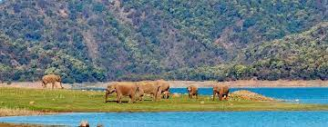

jim Corbett National Park IUCN category II (national park) Bengal tiger in Corbett National Park Map showing the location of Jim Corbett National ParkMap showing the location of Jim Corbett National Park Show map of Uttarakhand Show map of India Show all Location Nainital,Uttarakhand, India Nearest city Ramnagar, Kotdwar Coordinates 29°32′55″N 78°56′7″E Area 1,318 km² Established 1936 Visitors 500,000[1] (in 1999) Governing body Project Tiger, Government of Uttarakhand, Wildlife Warden, Jim Corbett National Park corbettonline.uk.gov.in Jim Corbett National Park is a national park in India located in the Nainital district of Uttarakhand state. The first national park in India, it was established in 1936 during the British Raj and named Hailey National Park after William Malcolm Hailey, a governor of the United Provinces in which it was then located. In 1956, nearly a decade after India's independence, it was renamed Corbett National Park after the hunter and naturalist Jim Corbett, who had played a leading role in its establishment and had died the year before. The park was the first to come under the Project Tiger initiative.[2] Corbett National Park comprises 520.8 km2 (201.1 sq mi) area of hills, riverine belts, marshy depressions, grasslands and a large lake. The elevation ranges from 1,300 to 4,000 ft (400 to 1,220 m). Winter nights are cold but the days are bright and sunny. It rains from July to September. The park has sub-Himalayan belt geographical and ecological characteristics.[3] Dense moist deciduous forest mainly consists of Shorea robusta (the sal tree), haldu, peepal, rohini and mango trees. Forest covers almost 73 per cent of the park, while 10 per cent of the area consists of grasslands. It houses around 110 tree species, 50 species of mammals, 580 bird species and 25 reptile species. An ecotourism destination,[4] the park contains 617 different species of plants and a diverse variety of fauna.[5][6] The increase in tourist activities, among other problems, continues to present a serious challenge to the park's ecological balance.[7] History Some areas of the park were formerly part of the princely state of Tehri Garhwal.[8] The forests were cleared by the Environment and Forests Department (Uttarakhand) to make the area less vulnerable to Rohilla invaders.[8] The Raja of Tehri formally ceded a part of his princely state to the East India Company in return for their assistance in ousting the Gurkhas from his domain.[8] The Buksas—a tribe from the Terai—settled on the land and began growing crops, but in the early 1860s they were evicted with the advent of British rule.[8] Efforts to save the forests of the region began in the 19th century under Major Ramsay, the British Officer who was in-charge of the area during those times. The first step in the protection of the area began in 1868 when the British forest department established control over the land and prohibited cultivation and the operation of cattle stations.[9] In 1879 these forests were constituted into a reserve forest where restricted felling was permitted. In the early 1900s, several Britishers, including E. R. Stevans and E. A. Smythies, suggested the setting up of a national park on this soil. The British administration considered the possibility of creating a game reserve there in 1907.[9] It was only in the 1930s that the process of demarcation for such an area got underway. A reserve area known as Hailey National Park covering 323.75 km2 (125.00 sq mi) was created in 1936, when Sir Malcolm Hailey was the Governor of United Provinces; and Asia's first national park came into existence.[10] Hunting was not allowed in the reserve, only timber cutting for domestic purposes. Soon after the establishment of the reserve, rules prohibiting killing and capturing of mammals, reptiles and birds within its boundaries were passed.[10]